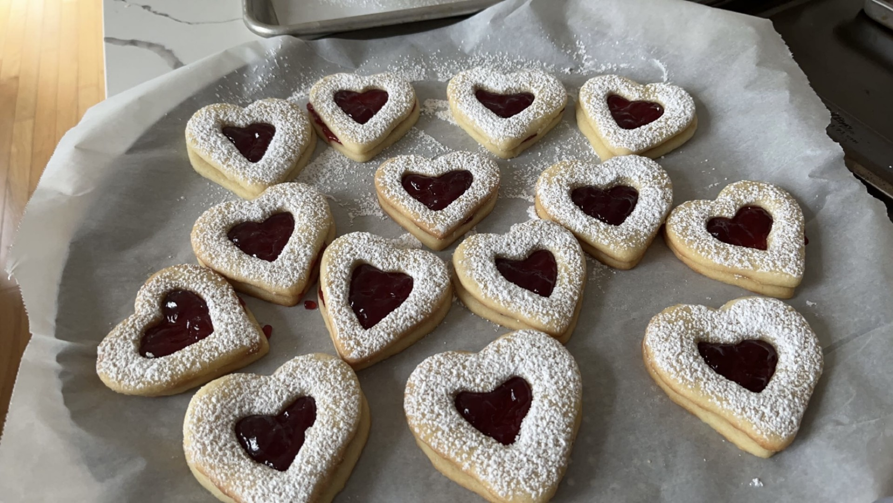

Shortbread Cookies
Ingredients:
1 1/3 cup AP flour
1/4 tsp baking powder
1/4 tsp salt
3/4 cup sugar
1/2 cup soften butter
1 egg
1 tsp vanilla
Powdered sugar
Seedless rasberry jam
Step 1: Combine the flour, baking powder, and salt into a seperate bowl.
Step 2: Beat the sugar and butter, then add in the egg and vanilla. Gradually add in the flour mixture.
Step 3: Divide the dough in half. Cover the dough and chill for 2 hours.
Step 4: Roll out 1 batch at a time to 3/16 inch thickness. Cut out and place the cookies 1.5-2 inches apart on a pan.
Step 5: Preheat the oven to 375 and bake for 7-9 minutes.
Step 6: Sprinkle powdered sugar on top. Spread jam onto cookies and stack.